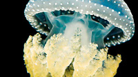
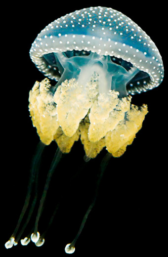
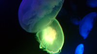
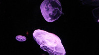

Home
JASPER DREW
Composer


Biography
Biography



Who is Asimo?
Who is Asimo?
Honda 'Asimo' (virals), 2006
Form: Corporate
Company:
Wieden & Kennedy UK
www.honda.co.uk/ASIMO
Honda ASIMO:
Internet short films showcasing Honda's new robot, ASIMO.
This was a project in which I could really do
what I enjoy: subtly interweave classical instruments with modern
synthesized effects.


Sea of Dust
Sea of Dust
Form: Feature
Company: Scott Bunt / Sea of Dust LLC
www.seaofdust.com
Sea of Dust:
US horror feature
Reminiscent of Bernard Hermann's lush, Germanic romanticism, and
so features predominantly orchestral music. Director Scott Bunt
was attracted to my emotive orchestral sound, as he wanted to
get away from relying on the classic sfx you often hear on
horror films.


Lone Star & Private Wars
Lone Star & Private Wars
Form: Theatre
Company: B.O.S productions / Oliver Royds
Incidental music for a play at the King's Head Theatre in London, starring James Jagger and Shane Ritchie.
This was my first foray into Country and Western music. I drew upon friends from my old music school to consult, try out material and record with; primarily using new instruments which I wasn't familiar with such as lap-steel and pedal-steel guitars.


Remembering Rodney
Remembering Rodney
Arranged for brass and percussion ensemble; written in memory of my father.


Funk Guitars
Funk Guitars


Glass
Glass
Uplifting electronica, even incorporating a church organ.

A Break
A Break
Indie, inspired by the loss of a girl.

Other Clients Include:
Other Clients Include: